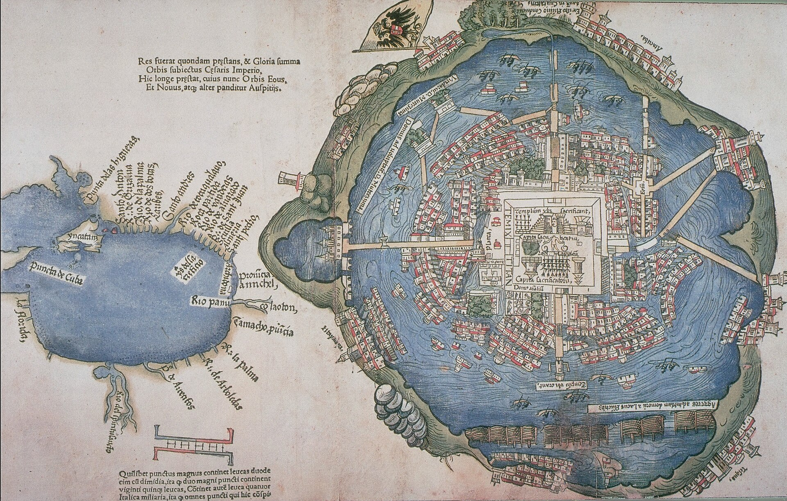

Directions: Work through the five stations in order. Each station holds one record of the two worlds that met after 1492: a letter written on the voyage home, a printed map of an island capital, a record of a mound city on the Mississippi, a record of a league in the northeast woodlands, and a sorting record of the exchange that followed the meeting. For each record, state what it shows about the world it came from. At the end, judge which single change after 1492 did the most to remake the Americas, and defend the judgment from the documents.
Source: Christopher Columbus, Columbus Reports on His First Voyage, 1493 (Gilder Lehrman Institute), as carried in the audited TPSP record. Cuts are marked with ellipses.
On the thirty-third day after leaving Cadiz I came into the Indian Sea, where I discovered many islands inhabited by numerous people. I took possession of all of them for our most fortunate King by making public proclamation and unfurling his standard, no one making any resistance. ... The island called Juana, as well as the others in its neighborhood, is exceedingly fertile. ... Besides, this Hispana abounds in various kinds of species, gold and metals. ...
... they are very guileless and honest, and very liberal of all they have. No one refuses the asker anything that he possesses; on the contrary they themselves invite us to ask for it. They manifest the greatest affection towards all of us, exchanging valuable things for trifles, content with the very least thing or nothing at all. ... I gave them many beautiful and pleasing things, which I had brought with me, for no return whatever, in order to win their affection, and that they might become Christians and inclined to love our King and Queen and Princes and all the people of Spain; and that they might be eager to search for and gather and give to us what they abound in and we greatly need.
Columbus writes that he took possession of the islands and that no one made any resistance. Whose act does he describe, whose consent does he record, and what does the passage leave out?
The letter was written to the king and queen who had paid for the voyage. Name two things Columbus tells them the islands and their peoples offer Spain, quoting his words for each one.
Source: Map of Tenochtitlan, printed at Nuremberg in 1524 with a letter of Hernan Cortes, woodcut published by Friedrich Peypus, probably after a drawing made by one of Cortes's men. Original held by the Newberry Library, Chicago. The map was printed in Europe three years after Spanish forces destroyed the city it shows.

Tenochtitlan stood on an island in Lake Texcoco. The map shows the city as a dense grid of streets and canals inside the lake, joined to the shore by causeways, with the great temple precinct at its center. Spanish visitors who saw the city before its destruction reported a population of perhaps two hundred thousand people, greater than London's at the same date, markets that drew tens of thousands on market days, and chinampas, raised garden plots in the shallow lake, that fed the city through the year. The map is a European print of an Indigenous capital, made for European readers, from a drawing carried across the Atlantic.
Name three features of the city the map and the account together establish, and state what each one shows about the society that built the city.
This record reached its readers after the city it shows had been destroyed. How should that date change the way a reader uses the map as evidence about Tenochtitlan in 1491?
Source: Teaching summary prepared for this lesson from the public record of the Cahokia Mounds State Historic Site, Illinois. This station is a summary, not a transcription of one document.
Near present day St. Louis, where the Mississippi, Missouri, and Illinois rivers meet, the people of Cahokia built the largest city of the Mississippian culture. At its height, between about 1050 and 1200, Cahokia held a population counted by archaeologists in the tens of thousands, in a city of plazas, neighborhoods, and some one hundred twenty earthen mounds. The largest, now called Monks Mound, rises about one hundred feet in four terraces and covers about fourteen acres at its base. Workers carried its earth basket by basket, without draft animals or metal tools. Cahokia's traders drew copper from the Great Lakes country, shells from the Gulf coast, and mica and stone from the mountains and plains, and its farmers raised maize, beans, and squash in the rich river bottom. Satellite towns and farming villages spread for miles around the center. By 1491 the great city itself had long declined, and its mounds stood as the record of what its builders had organized centuries before Europeans arrived to see them.
The summary calls Cahokia a city. State the evidence it gives for that word, naming the count of mounds, the size of the largest, and the reach of its trade.
Cahokia's height came centuries before 1491. Why does the record of a city already in decline still belong in a file about the Americas on the eve of contact?
Source: Teaching summary prepared for this lesson from the public record of the Haudenosaunee, the Iroquois Confederacy. This station is a summary, not a transcription of one document.
In the woodlands of present day New York, five nations, the Mohawk, Oneida, Onondaga, Cayuga, and Seneca, stood joined in a league that their own tradition credits to the Peacemaker and to Hiawatha, who carried his message from nation to nation. Under the Great Law the five nations ended war among themselves and kept a council fire at Onondaga, the central nation, where speakers for each nation settled questions that touched them all. Each nation governed its own towns and hunting grounds. On questions of war, peace, and dealings with outsiders, the league acted together, and its speakers treated with neighboring peoples and, in time, with French, Dutch, and English traders and officials as diplomats of a power that could set terms. The league's farming towns raised maize, beans, and squash, and its hunters and traders moved along the lakes and rivers of the northeast. A sixth nation, the Tuscarora, joined in the early 1700s.
State what the Great Law settled inside the league, and what the league handled jointly toward outsiders. Answer from the summary.
A league is not an empire and not a single nation. Using the summary, explain in two sentences what kind of power the five nations built by joining, and what each nation kept for itself.
Source: Teaching summary prepared for this lesson, sorting the movements of the Columbian Exchange as the lesson reading presents them. This station is a summary, not a transcription of one document.
After 1492, ships crossing the Atlantic carried living cargo in both directions, and the movements can be sorted. From the Americas to the Eastern Hemisphere went maize, potatoes, tomatoes, and other American crops, which in time raised the food supply of Europe, Africa, and Asia. From the Eastern Hemisphere to the Americas went wheat, sugar cane, horses, cattle, and pigs. Horses spread across the plains and remade hunting, travel, and war for the peoples who adopted them. Sugar, planted first in the Caribbean and Brazil, demanded labor on a scale that pulled the Americas into the Atlantic slave trade, a movement of people carried by force, counted in later lessons of this unit. Diseases crossed westward as well, smallpox first among them, into populations with little resistance, and killed, by contemporary scholarly estimates, nine people in ten in many regions over the following century.
| Item | Direction | First effects named in the summary |
|---|---|---|
| Maize, potatoes, tomatoes | ||
| Wheat, horses, cattle, pigs | ||
| Sugar cane | ||
| Smallpox |
Complete the table from the summary. Then state which row of the table the summary itself measures in lives rather than in goods, and give the measure it uses.
Build the ledger from the five stations. For each record, state what it shows about the world it came from, in one sentence grounded in the station.
| Record | What it shows about its world |
|---|---|
| Columbus's letter, 1493 | |
| Map of Tenochtitlan, 1524 | |
| Cahokia | |
| The Iroquois Confederacy | |
| The exchange, sorted |
Close the file with a verdict. Judge which single change after 1492 did the most to remake the Americas, and defend your choice against the strongest rival change in the file. Use evidence from at least two stations.
Whose act, whose consent, and what is left out? The act is Columbus's own: he took possession for the king of Spain by proclamation and by unfurling the royal standard. The passage records no consent by the islands' peoples. It records only that no one made any resistance, in Columbus's telling, to a ceremony performed in a language and a legal form the islanders had no part in making. What the passage leaves out is any Indigenous account of the same days: what the peoples of the islands understood, offered, or refused exists in this record only as Columbus chose to report it.
Name two things the islands and their peoples offer Spain, in his words. Any two, quoted: the land itself, exceedingly fertile, with great farms, groves and fields; the riches, since Hispana abounds in various kinds of species, gold and metals; the peoples' goods, since they are very liberal of all they have and exchange valuable things for trifles; and their labor and conversion, since Columbus gave gifts so that they might become Christians, love the king and queen, and be eager to search for and gather and give to us what they abound in and we greatly need. Students should see that each offer answers the audience's question: what did the money buy, and what will the next voyage return?
Name three features, and what each shows. The island setting joined to the shore by causeways shows planned engineering on water. The dense grid of streets and canals shows an ordered city of neighborhoods, not a camp. The chinampas show intensive farming fitted to the lake. The great temple precinct at the center shows a state that organized religion, tribute, and building at an imperial scale. The market counts, tens of thousands on market days, show exchange as a daily institution. Any three, each tied to its inference, earn full credit.
How should the 1524 date change the reading? The map is evidence twice over, and the two uses must be kept apart. As a picture of the city, it reports a place its makers had seen or drawn from reports, and its details can be weighed against other records. As an object, it is a European print, published at Nuremberg for European readers three years after the city's destruction, and it tells a reader as much about what Europe wanted to see and to claim as about what stood on the lake in 1491. A reader who forgets the date treats a conqueror's publication as a photograph.
State the evidence for the word city. Some one hundred twenty earthen mounds around plazas and neighborhoods; the largest mound rising about one hundred feet in four terraces over about fourteen acres at its base, raised basket by basket without draft animals or metal tools; a population counted in the tens of thousands; satellite towns and farming villages spread for miles; and trade drawing copper from the Great Lakes country, shells from the Gulf coast, and mica and stone from the mountains and plains.
Why does a city in decline belong in the file? Because the eve of contact is measured against what stood in the hemisphere before it, and Cahokia's mounds are the physical record of organization on a continental scale centuries before 1492. The decline also teaches the prior fact students need: Indigenous societies rose, changed, and fell for reasons of their own long before Europeans arrived, so contact struck living societies with histories, not a world standing still.
What did the Great Law settle, and what was handled jointly? Inside the league, the Great Law ended war among the five nations and kept a council fire at Onondaga where speakers settled questions that touched them all. Toward outsiders, the league acted together on war, peace, and dealings with other peoples, treating as diplomats of a combined power.
What kind of power did joining build, and what did each nation keep? Joining built a power none of the five held alone: peace at home and a single voice abroad, strong enough to set terms with neighbors and, in time, with European traders and officials. Each nation kept its own government, its towns, and its hunting grounds. The league joined foreign policy and internal peace; it did not merge the nations into one state.
Complete the table, and name the row measured in lives. Maize, potatoes, tomatoes: from the Americas east; in time they raised the food supply of Europe, Africa, and Asia. Wheat, horses, cattle, pigs: from the Eastern Hemisphere west; horses remade hunting, travel, and war on the plains. Sugar cane: from the Eastern Hemisphere west; planted in the Caribbean and Brazil, it demanded labor on a scale that pulled the Americas into the Atlantic slave trade. Smallpox: westward with the other diseases; it is the row the summary measures in lives, killing, by contemporary scholarly estimates, nine people in ten in many regions over the following century.
Columbus's letter shows a Europe that arrived claiming: a salaried captain reporting to his investors in the language of possession, fertility, gold, and conversion. The Tenochtitlan map shows an Indigenous capital of European scale and order, known to its readers only through a conqueror's print issued after its destruction. Cahokia shows an Indigenous city building tradition centuries deep on the Mississippi, with continental trade and organized labor. The league record shows Indigenous diplomacy as statecraft: peace kept by law among five nations and a joint voice toward outsiders. The exchange record shows the meeting's traffic sorted by direction, crops, animals, sugar and its labor demand, and disease. Closing verdicts earn full credit when the change chosen is defended against a named rival. The strongest cases are usually made for epidemic disease, argued from the scale in Station 5 and from what the population loss did to every society in Stations 2, 3, and 4, and for the Columbian Exchange as a whole, argued from the permanence of its crops and animals in both hemispheres. A case for conquest and colonization can earn full credit if argued from Station 1's claim and its consequences rather than from later events outside the file.